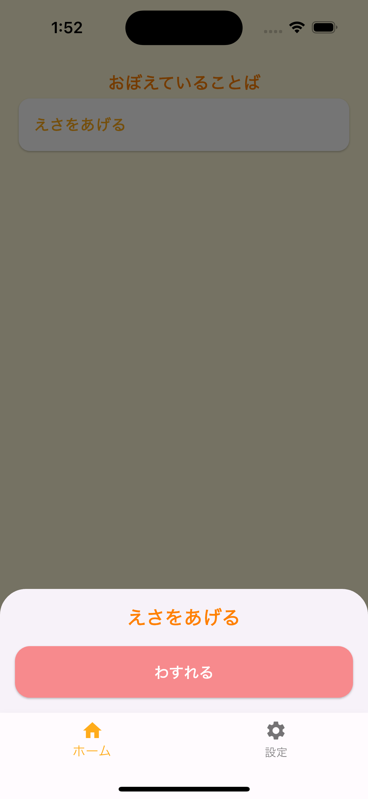

はじめに
FlutterでBottomNavigationBarとModalBottomSheetを組み合わせて使う際、ModalBottomSheetがBottomNavigationBarの背面(上)に表示されて困っていました。
この記事では、ModalBottomSheetをBottomNavigationBarの前面に表示する方法を紹介します。
| before | after |
|---|---|
|  |
環境
- Flutter 3.19.6
方法
// ModalBottomSheetを表示する
showModalBottomSheet<void>(
useRootNavigator: true, // この行を追加する
context: context,
builder: (context) {
return PhraseActionBottomSheet(
phrase: phraseList[i],
);
},
);
公式ドキュメントによると、
The useRootNavigator parameter ensures that the root navigator is used to display the BottomSheet when set to true. This is useful in the case that a modal BottomSheet needs to be displayed above all other content but the caller is inside another Navigator.
useRootNavigator: trueを指定することで、ModalBottomSheetがRootNavigatorを使用して表示されるようになります。これにより、ModalBottomSheetが他のコンテンツの上に表示されるようになります。
とのことです。
参考
https://api.flutter.dev/flutter/material/showModalBottomSheet.html